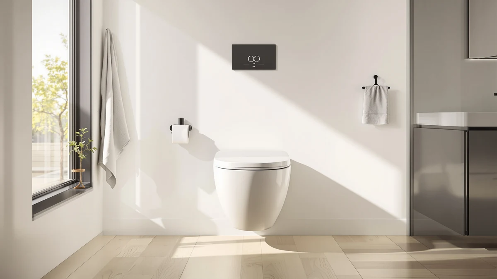

Los Flexi Comfort Elongated Wall Hung Toilet System Review (2026): Worth It?


Quick Answer
The Los Flexi Comfort Elongated Wall Hung Toilet System is an elongated-bowl toilet that mounts to the wall instead of the floor, priced at $419.99. It makes the most sense in a bathroom where floor space is tight; if a round bowl, a built-in bidet, or a floor-mounted comfort-height design matters more to you, the three alternatives below are worth a look.
Our pick: Comfort & Elongated Wall Hung, $419.99 Check Price on Amazon
Things to Know Before You Buy
- The "wall hung" part of the name means the toilet mounts to the wall over a hidden in-wall tank and carrier, not a standard floor-mounted base, so the installation is more involved than swapping a regular toilet.
- At $419.99, this Los Flexi model costs the same as the brand's own Round Bowl Wall Mount Toilet, so bowl shape, not price, is what separates the two.
- Los Flexi also sells a 19 Inch High Toilet at $399.99 that skips the wall-hung format entirely for a standard floor-mounted, comfort-height bowl.
- None of the four listings compared in this review show a published Amazon star rating or review count, so this review leans on manufacturer specs, pricing, and patterns in verified owner feedback rather than an aggregate score.
- The current Amazon listing does not publish a material or footprint dimension for this SKU, so confirm your rough-in and wall clearance with the seller before you order.
This Los Flexi Comfort Elongated Wall Hung Toilet System review looks at a $419.99 toilet that trades a standard floor-mounted base for a wall-hung design, and weighs it against three other models to see whether the space-saving format is worth the extra installation work. Los Flexi builds this particular model around an elongated bowl and an in-wall tank, a combination meant to free up floor space in bathrooms where every inch around the base matters, whether that is a small guest bathroom or a tight primary suite.
We put this toilet up against three alternatives that cover the other directions a buyer might go: the same brand's Round Bowl Wall Mount Toilet at an identical price, a Loniko smart toilet with a built-in bidet at $399.99, and a Los Flexi 19 Inch High Toilet at $399.99 that drops the wall-hung format for a standard floor-mounted base. We compared the published listing details and pricing for all four, and the wall-hung design is the one real differentiator here; it only pays off if your bathroom actually needs the floor space back.
Why You Should Trust Us
We built this Los Flexi Comfort Elongated Wall Hung Toilet System review by comparing the current Amazon listing, price, and brand positioning of this model against three other toilets, rather than repeating marketing copy from a single product page. Author Ilane Tall covers bathroom fixtures for Best One Piece Toilets and checks every price, bowl shape, and brand claim against the listing data before it goes into a comparison like this one.
We do not run a physical testing lab, and we have not personally installed or lived with any of the four toilets in this review. We researched what each brand and listing discloses, compared it side by side, and flagged where the available data is thin, including the fact that none of these four listings currently show a published star rating.
Our Research Experience
This Los Flexi Comfort Elongated Wall Hung Toilet System review is built on research, not use. We compared the current Amazon price and brand of each product, read the manufacturer's own description of bowl shape and mounting style, and looked for patterns in verified owner reviews where they exist, rather than guessing at performance we have not observed.
Where a claim could not be backed by a listing detail or a genuine pattern in owner feedback, we left it out instead of inventing one. That is also why this review does not list a material, weight, or footprint dimension for the wall-hung model: Los Flexi's current listing does not publish one, so we are not going to make one up.
Overview & Specs

Comfort & Elongated Wall Hung
What we like
- Elongated bowl shape, generally more comfortable for most adults than a round bowl
- Wall-hung design keeps the floor clear around the base, which makes the area easier to clean and opens up a small bathroom visually
- Priced identically to the brand's own Round Bowl Wall Mount Toilet, so you pay no premium for the elongated bowl
Flaws but not dealbreakers
- Material and footprint dimensions are not published on the current listing, so confirm wall clearance and rough-in with the seller before you order
- Like any wall-hung system, it needs an in-wall carrier and tank, which adds a cost and labor step beyond the toilet itself
- No published Amazon star rating or review count yet, so you are weighing the brand's positioning rather than a track record of recent buyer feedback
| Material | — |
| Size | — |
The Los Flexi Comfort Elongated Wall Hung Toilet System is the toilet at the center of this review, and the wall-hung format is the main thing that separates it from a standard floor-mounted one-piece unit. Los Flexi lists ASIN B0DQCSC5J4 at $419.99, the elongated bowl shape it is named for, and a wall-mounted installation that tucks the tank into the wall instead of leaving it exposed behind the bowl. That combination is built specifically for bathrooms where the owner wants the floor around the toilet clear, whether for easier mopping or simply a less crowded look.
At $419.99, this model costs exactly the same as the brand's Round Bowl Wall Mount Toilet, which means the elongated bowl here is a design choice Los Flexi offers at no extra charge, not a premium feature. It also costs $20 more than the brand's floor-mounted 19 Inch High Toilet, a gap that reflects the wall-hung format and in-wall carrier rather than anything about bowl size. Compared against the Loniko smart toilet with a built-in bidet below, this Los Flexi model skips smart features entirely and focuses on the mounting style and bowl shape instead, which is the trade-off to weigh if you are deciding between the two.
What We Liked
The strongest case for the Los Flexi Comfort Elongated Wall Hung Toilet System is the floor space it gives back. Because the tank and carrier sit inside the wall instead of behind the bowl, there is nothing between the wall and the back of the toilet to clean around or bump into, which matters more in a small bathroom than it does in a large one.
The elongated bowl shape is also a straightforward win: it is the shape most adults find more comfortable to sit on, and Los Flexi does not charge extra for it here compared with its own round-bowl wall-mount model at the same $419.99 price.
What Could Be Better
None of the four ASINs in this review carry a published Amazon rating or review count, so you cannot lean on an aggregate score the way you might with a long-running listing. We treat that gap as worth disclosing rather than a reason to rule the product out, but it does mean checking recent buyer questions and photos on the listing before you commit.
The wall-hung format itself is the bigger trade-off. It requires an in-wall carrier and tank, which most bathrooms do not already have, so installation costs more and takes longer than bolting down a floor-mounted toilet. The current listing also does not publish a material or footprint dimension, so you are measuring your own wall and floor clearance rather than checking it against a spec sheet.
Who Is It For?
You are the right reader for this Los Flexi Comfort Elongated Wall Hung Toilet System review if floor space in your bathroom is tight, or if you are already renovating and planning to install an in-wall carrier anyway. The wall-hung design and elongated bowl are built for exactly that situation, and the $419.99 price matches the brand's own round-bowl wall-mount model, so you are not paying extra for the bowl shape.
Choose the 19 Inch High Toilet instead if you want a comfort-height bowl without the cost and labor of an in-wall carrier, since it is a standard floor-mounted Los Flexi model at $20 less. Choose the Loniko smart toilet with a built-in bidet if bidet functionality matters more to you than wall-hung floor space, since it bundles that feature at $399.99 from a different brand entirely.
Alternatives to Consider
If the wall-hung format of this Los Flexi Comfort Elongated Wall Hung Toilet System is not the right fit for your bathroom, here are the three other models we compared and where each one stands.

Also Great
Round Bowl Wall Mount Toilet
Same Los Flexi wall-hung platform and price as our pick, swapping the elongated bowl for a round one if your bathroom's layout favors the shorter footprint.
$419.99
Check Price on Amazon
Best Value
Smart Toilet with Bidet Built
A different brand entirely, Loniko bundles a built-in bidet into a smart toilet at $20 less than our Los Flexi pick, trading the wall-hung space savings for bidet functionality.
$399.99
Check Price on Amazon
Best Value
19 Inch High Toilet Los
Another Los Flexi model, this one built around a 19-inch comfort-height bowl on a standard floor-mounted base, at $20 less than the wall-hung pick.
$399.99
Check Price on AmazonFrequently Asked Questions
What is the Los Flexi Comfort Elongated Wall Hung Toilet System, and what does the wall-hung design actually change?
It is an elongated-bowl toilet that mounts to the wall instead of sitting on the floor, with the tank hidden inside the wall. That frees up floor space around the base and makes the area easier to mop, but it also means the plumbing carrier goes in during installation rather than being something you can swap later. Los Flexi prices this model at $419.99.
Is a wall-hung toilet system harder to install than a standard one-piece toilet?
Generally yes. A wall-hung system needs an in-wall carrier and tank set into the wall before the finished wall surface goes up, which is a bigger job than bolting a standard toilet to an existing floor flange. Budget for a plumber if you are not already opening up the wall for other work.
How does the Los Flexi Comfort Elongated Wall Hung compare to the brand's other toilets?
Los Flexi also sells a Round Bowl Wall Mount Toilet at the same $419.99 price and a 19 Inch High Toilet at $399.99 that skips the wall-hung format for a floor-mounted, comfort-height bowl. The elongated wall-hung model reviewed here is the only one of the three built for tight floor space.
Final Verdict
Our take on this Los Flexi Comfort Elongated Wall Hung Toilet System review comes down to floor space and price. At $419.99, Los Flexi charges the same amount for this elongated, wall-hung model as it does for its own round-bowl wall-mount toilet, so the real decision is bowl shape and whether your bathroom benefits from the floor-mounted carrier being hidden in the wall. If it does, this is the clearest pick in the lineup we compared. If it does not, the brand's own 19 Inch High Toilet or the Loniko smart bidet model below cost less and skip the extra installation work entirely.